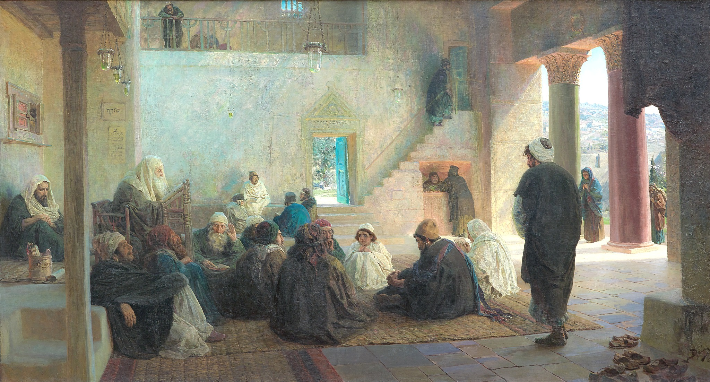

Τα σχήματα της εβδομάδας (7)#

Ο πίνακας Ο Χριστός ανάμεσα στους διδασκάλους του Vasily Polenov.#
Αυτήν την εβδομάδα είδαμε αρκετά νέα και ενδιαφέρονται σχήματα καθώς επίσης και μία ακόμα βιβλιοθήκη του tikz. Όλα με τη σειρά τους, όμως.
Για τα σχήματα της προηγούμενης εβδομάδας δείτεεδώενώ για όλες τις αναρτήσεις της σειράς δείτεεδώ.
Σύνολα τιμών…#
Το πρώτο μας σχήμα ήταν το εξής:

Το σύνολο και το πεδίο τιμών μίας συνάρτησης!#
Ο αντίστοιχος κώδικας είναι ο εξής:
\documentclass[tikz, margin=5mm]{standalone}
\usetikzlibrary{calc}
\begin{document}
\begin{tikzpicture}
\draw[thick] (0,0) ellipse (1.4 and 2.2)node[yshift=-2.4cm,xshift=-1cm]{$A$};
\draw[thick] (6,0) ellipse (1.4 and 2.2)node[yshift=-2.4cm,xshift=1cm]{$B$};
\node[circle, inner sep=1pt, fill=black, draw=black, label={left}:{$a$}](a) at (.4,1.2){};
\node[circle, inner sep=1pt, fill=black, draw=black, label={left}:{$b$}](b) at (-.2,.5){};
\node[circle, inner sep=1pt, fill=black, draw=black, label={left}:{$c$}](c) at (.5,-.2){};
\node[circle, inner sep=1pt, fill=black, draw=black, label={left}:{$d$}](d) at (-.6,-.9){};
\node[circle, inner sep=1pt, fill=black, draw=black, label={left}:{$e$}](e) at (.3,-1.2){};
\node[circle, inner sep=1pt, fill=black, draw=black, label={right}:{$1$}](1) at (6.3,1.3){};
\node[circle, inner sep=1pt, fill=black, draw=black, label={right}:{$2$}](2) at (5.4,.6){};
\node[circle, inner sep=1pt, fill=black, draw=black, label={right}:{$3$}](3) at (6.4,-.2){};
\node[circle, inner sep=1pt, fill=black, draw=black, label={right}:{$4$}](4) at (6,-.8){};
\node[circle, inner sep=1pt, fill=black, draw=black, label={right}:{$5$}](5) at (5.7,-1.5){};
\node[circle, inner sep=1pt, fill=black, draw=black, label={right}:{$6$}](6) at (5.3,-.3){};
\draw[thick,->] (a) -- (2);
\draw[thick,->] (b) -- (6);
\draw[thick,->] (c) -- (2);
\draw[thick,->] (d) -- (5);
\draw[thick,->] (e) -- (4);
\node[draw=none](x) at ($(2)+(.1,.3)$){};
\node[draw=none](y) at ($(4)+(.3,0)$){};
\node[draw=none](z) at ($(5)+(0,-.3)$){};
\node[draw=none](w) at ($(6)+(-.3,0)$){};
\node[draw=none](m) at ($(6)+(.7,.2)$){};
\draw[dashed, red, thick, fill=red, fill opacity=.1] plot [smooth cycle, tension=1] coordinates {(x.north east) (m) (y.north east) (z.south east) (w.west)};
\node[label={above}:{$\textcolor{red}{f(A)}$}] at (x){};
\end{tikzpicture}
\end{document}
Η αλήθεια είναι ότι, αν εξαιρέσουμε το σύνολο τιμών της συνάρτησης, όλα τα άλλα είναι πράγματα που έχουμε ξαναδεί. Κόμβοι, ελλείψεις, βελάκια, ετικέτες, όλα γνωστά και πλέον τα χρησιμοποιούμε τόσο συχνά. Επομένως, πάμε απευθείας να σχολιάσουμε το πώς σχεδιάσαμε αυτήν την φαινομενικά περίπλοκη και ακανόνιστη καμπύλη που περιγράφει το σύνολο τιμών της συνάρτησής μας.
Αρχικά, σχεδιάζουμε όπως βλέπετε, κάποιους κόμβους που έχουν την παράμετρο draw=none. Αυτή η επιλογή μας επιτρέπει να τοποθετήσουμε κόμβους στο σχήμα μας που δε θα φαίνονται - χωρίς, ωστόσο, όπως θα δούμε στο μέλλον, αυτό να σημαίνει ότι χάνουν όλες τις σχεδιαστικές τους ιδιότητες - και άρα να εξυπηρετήσουν πιο «χθόνιους» σκοπούς. Για την ακρίβεια, οι κόμβοι που σχεδιάζουμε παραπάνω θα μας αξιοποιηθούν ως τα «άκρα» της καμπύλης που θα αποτελέσει το σύνορο του συνόλου τιμών.
Ένα άλλο ενδιαφέρον στοιχείο που μπορεί να παρατηρήσει κανείς είναι το πώς καθορίζουμε τη θέση αυτών των κόμβων. Αντί να δώσουμε τις συντεταγμένες τους με το χέρι, επιλέγουμε μία πιο δυναμική τεχνική η οποία μας επιτρέπει, αν για κάποιον λόγο το θελήσουμε, να μετακινήσουμε τα σημεία που βρίσκονται στο πεδίο τιμών και, μαζί με αυτά, να μετακινηθεί και το σύνολο τιμών. Αυτό το πετυχαίνουμε μέσα από το να προσθέσουμε (διανυσματικά) σε ήδη υπάρχοντες κόμβους, μικρές μετατοπίσεις. Έτσι, η εντολή:
\node[draw=none](x) at ($(2)+(.1,.3)$){};
κατασκευάζει έναν αφανή κόμβο ο οποίος θα βρίσκεται 0.1 εκατοστά δεξιότερα και 0.3 εκατοστά πιο πάνω από τον κόμβο με όνομα (2). Έτσι, όπου κι αν μετακινήσουμε τον κόμβο (2) θα πάει και ο κόμβος (x). Με τον παραπάνω τρόπο πετυχαίνουμε να προσδώσουμε στο σχήμα μας έναν πιο δυναμικό χαρακτήρα - με τον περιορισμό, βέβαια, ότι δοκιμάσαμε αρκετή ώρα με το χέρι να βρούμε τις βολικές θέσεις για τους κόμβους (x), (y), (z) κ.λπ.
Έχοντας αυτούς τους κόμβους, σχεδιάζουμε πλέον την καμπύλη μας με την ακόλουθη εντολή-σιδηρόδρομο:
\draw[dashed, red, thick, fill=red, fill opacity=.1] plot [smooth cycle, tension=1] coordinates {(x.north east) (m) (y.north east) (z.south east) (w.west)};
Ας την εξηγήσουμε βήμα-βήμα:
Αρχικά, στη λίστα παραμέτρων της
\drawδίνουμε κάποιες παραμέτρους για το πώς θα φαίνεται η γραμμή και το πώς θα γεμίζει το εσωτερικό της.Στη συνέχεια, χρησιμοποιούμε τη γνωστή μας
plotαλλά όχι με το συνηθισμένο, για εμάς, συντακτικό της. Αντί να της δώσουμε κάποια σημεία με συντεταγμένες και μία μεταβλητή, της δίνουμε για αρχή μία λίστα παραμέτρων. Για την ακρίβεια, δίνουμε τις παραμέτρουςsmoothκαιcycle. Η τελευταία μάς είναι γνωστή και υποδηλώνει ότι η καμπύλη πρέπει να κλείσει στο τέλος. Η πρώτη υποδηλώνει ότι οι κόμβοι που θα δοθούν στην πορεία - βλ. παρακάτω - πρέπει να συνδεθούν με μία ομαλή καμπύλη (θα εξηγήσουμε σε λίγο πώς προκύπτει, περίπου, αυτή η ομαλή καμπύλη). Επίσης, η παράμετροςtensionκαθορίζει την ομαλότητα της καμπύλης μας - μπορείτε να παίξετε λίγο μαζί της και να δείτε πώς επηρεάζει το σχήμα της καμπύλης μας.Έπειτα, δίνουμε μετά την εντολή
coordinatesένα σύνολο από συντεταγμένες - κόμβους - από τους οποίους θέλουμε να περάσει η καμπύλη μας. Όπως θα παρατηρήσετε, σε κάποιες περιπτώσεις δε χρησιμοποιούμε τους ίδιους τους κόμβους αλλά τα… σημεία του ορίζοντα. Πρακτικά, τα τέσσερα σημεία του ορίζοντα - με την ανατολή να υποδηλώνει το «δεξιά» και τον βορρά του «πάνω» - χρησιμοποιούνται για έναν κόμβο σαν παράμετροι που υποδηλώνουν από ποια ακριβώς πλευρά του κόμβου επιθυμούμε να συμβεί κάτι - όπως, π.χ., να περάσει μία καμπύλη. Αποτελούν, όπως τα λέμε, τα λεγόμενα anchors ενός κόμβου και το συντακτικό έχει τη μορφήnode_name.anchor.
Τώρα, να πούμε και λίγα λόγια για τον αλγόριθμο που σχεδιάζει την καμπύλη. Γενικά, χρησιμοποιούνται κάποιες γνωστές καμπύλες στο χώρο της γραφικής σχεδίασης, οι καμπύλες Bézier. Αν και δε θα ασχοληθούμε - τώρα - με αυτές, να πούμε πως η βασική ιδέα του αλγορίθμου είναι η εφαπτομένη της καμπύλης που προκύπτει σε κάθε σημείο που καθορίζουμε - πέρα από το τελικό και το αρχικό - να είναι παράλληλη στην χορδή που καθορίζουν το προηγούμενο και το επόμενο σημείο που έχουμε δώσει.
Ουφ! Πολλή δουλειά για ένα fancy κυκλάκι, στο τέλος της ημέρα!
Μία απλή γραφική παράσταση…#
Το επόμενο σχήμα μας είναι το εξής:

Μία απλή συνεχής συνάρτηση.#
Ο αντίστοιχος κώδικας είναι ο ακόλουθος:
\documentclass[tikz, margin=5mm]{standalone}
\pgfdeclarelayer{bg}
\pgfsetlayers{bg,main}
\begin{document}
\begin{tikzpicture}
\draw[thick,->] (-4,0) -- (4,0)node[pos=1,below]{$x$};
\draw[thick,->] (0,-2.7) -- (0,3)node[pos=1,left]{$y$};
\begin{scope}
\clip (-4,-2.7) rectangle (4,3);
\draw[thick,blue!50!black, domain={.5}:{3},samples=100] plot (\x,{2/(\x+.5)});
\draw[thick,blue!50!black, domain={-3}:{-1},samples=100] plot (\x,{1.5+\x});
\end{scope}
\node[circle, inner sep=1pt, fill=blue!50!black, draw=blue!50!black, label={left}:{$\scriptstyle\left(-3,-\frac{3}{2}\right)$}](a) at (-3,-1.5){};
\node[circle, inner sep=1pt, fill=white, draw=blue!50!black, label={above}:{$\scriptstyle\left(-1,\frac{1}{2}\right)$}](b) at (-1,.5){};
\node[circle, inner sep=1pt, fill=white, draw=blue!50!black, label={above}:{$\scriptstyle\left(\frac{1}{2},2\right)$}](c) at (.5,2){};
\node[circle, inner sep=1pt, fill=blue!50!black, draw=blue!50!black, label={right}:{$\scriptstyle\left(3,\frac{4}{7}\right)$}](d) at (3,{4/7}){};
\begin{pgfonlayer}{bg}
\draw[dashed, color=blue!50!black] (a) rectangle (0,0);
\draw[dashed, color=blue!50!black] (b) rectangle (0,0);
\draw[dashed, color=blue!50!black] (c) rectangle (0,0);
\draw[dashed, color=blue!50!black] (d) rectangle (0,0);
\end{pgfonlayer}
\end{tikzpicture}
\end{document}
Εδώ δεν έχουμε κάτι τρομερό, είναι η αλήθεια, καθώς τα περισσότερα τα έχουμε δει πάρα πολλές φορές. Ίσως όμως είναι ευκαιρία να αναφερθούμε σε μία εντολή του \(\LaTeX\) που χρησιμοποιούμε συχνά στο tikz: την \scriptstyle. Η εν λόγω εντολή χρησιμοποιείται σε μαθηματικό περιβάλλον και μετασχηματίζει όλα τα σύμβολα στην αντίστοιχη μορφή που έχουν όταν εμφανίζονται σε εκθέτες και δείκτες. Έτσι, μπορούμε να πετύχουμε μία άμεση και κομψή σμίκρυνση των χαρακτήρων που μας απασχολεί να μικρύνουμε.
Σχεδόν το ίδιο…#
Το επόμενο σχήμα μας δε διαφέρει και πολύ…

Σχεδόν το ίδιο…#
Ο αντίστοιχος κώδικας, ωστόσο, είναι κάπως πιο πλούσιος:
\documentclass[tikz, margin=5mm]{standalone}
\usetikzlibrary{calc}
\usetikzlibrary{intersections}
\pgfdeclarelayer{bg}
\pgfsetlayers{bg,main}
\begin{document}
\begin{tikzpicture}
\draw[thick,->] (-4,0) -- (4,0)node[pos=1,below]{$x$};
\draw[thick,->] (0,-2.7) -- (0,3)node[pos=1,left]{$y$};
\begin{scope}
\clip (-4,-2.7) rectangle (4,3);
\draw[thick,blue!50!black, domain={.5}:{3}, samples=100, name path global=curve 1] plot (\x,{2/(\x+.5)});
\draw[thick,blue!50!black, domain={-3}:{-1}, samples=100, name path global=curve 2] plot (\x,{1.5+\x});
\end{scope}
\foreach \i in {-2.78,-2.54,...,-1}{
\pgfmathtruncatemacro{\coord}{100*\i}
\draw[draw=none, name path=line \coord] (\i,-2.7) -- (\i,3);
\node[draw=none, name intersections={of=curve 2 and line \coord},inner sep=0pt](a\coord) at (intersection-1){};
\draw[orange,<-] ($(-4,0)!(a\coord)!(4,0)$) -- (a\coord);
}
\foreach \i in {.72,.94,...,3}{
\pgfmathtruncatemacro{\coord}{100*\i}
\draw[draw=none, name path=line \coord] (\i,-2.7) -- (\i,3);
\node[draw=none, name intersections={of=curve 1 and line \coord},inner sep=0pt](a\coord) at (intersection-1){};
\draw[orange,<-] ($(-4,0)!(a\coord)!(4,0)$) -- (a\coord);
}
\node[circle, inner sep=1pt, fill=blue!50!black, draw=blue!50!black, label={left}:{$\scriptstyle\left(-3,-\frac{3}{2}\right)$}](a) at (-3,-1.5){};
\node[circle, inner sep=1pt, fill=white, draw=blue!50!black, label={above}:{$\scriptstyle\left(-1,\frac{1}{2}\right)$}](b) at (-1,.5){};
\node[circle, inner sep=1pt, fill=white, draw=blue!50!black, label={above}:{$\scriptstyle\left(\frac{1}{2},2\right)$}](c) at (.5,2){};
\node[circle, inner sep=1pt, fill=blue!50!black, draw=blue!50!black, label={right}:{$\scriptstyle\left(3,\frac{4}{7}\right)$}](d) at (3,{4/7}){};
\begin{pgfonlayer}{bg}
\draw[dashed, color=blue!50!black] (a) rectangle (0,0);
\draw[dashed, color=blue!50!black] (b) rectangle (0,0);
\draw[dashed, color=blue!50!black] (c) rectangle (0,0);
\draw[dashed, color=blue!50!black] (d) rectangle (0,0);
\end{pgfonlayer}
\draw[orange,thick] (-3,0) -- (-1,0);
\draw[orange,thick] (.5,0) -- (3,0);
\end{tikzpicture}
\end{document}
Αν εμφανίζονται οι κώδικες html unicode ``<`` και ``>`` είναι γιατί το block που εμφανίζει τον κώδικα έχει ένα μικρό bug. Το ``<`` αντιστοιχεί στο ``<`` και το ``>`` στο ``>``.
Επί της ουσίας, έχουμε προσθέσει κάτι βελάκια από τη γραφική παράσταση προς τον άξονα \(xʹx\) πράγμα που, αν και είναι απλό με το χέρι, εδώ θέλει λίγη περισσότερη δουλίτσα. Για την ακρίβεια, αρχικά ξεκινάμε μία επανάληψη με την εντολή:
\foreach \i in {-2.78,-2.54,...,-1} {stuff...}
Να θυμίσουμε εδώ ότι η \foreach καθορίζει τις τιμές που παίρνει ο μετρητής της μέσω μίας λίστας η οποία είτε περιέχει αναλυτικά τις τιμές είτε έχει την ακόλουθη δομή:
{start, step,..., end}
Το πρώτο όρισμα καθορίζει το πρώτο στοιχείο της λίστας, το τελευταίο το τελευταίο και το ενδιάμεσο μας λέει κατά πόσο μεγαλύτερο είναι κάθε στοιχείο από το προηγούμενό του - αριθμητική πρόοδος, με λίγα λόγια. Τώρα, εμείς δώσαμε ένα αρχικό σημείο, ένα τελικό κι ένα βήμα όπως βλέπουμε και παραπάνω.
Αφού ανοίξαμε τον βρόχο, η πρώτη εντολή που δίνουμε είναι αυτό το αλλοπρόσαλλο πράγμα:
\pgfmathtruncatemacro{\coord}{100*\i}
Αυτή η εντολή αποθηκεύει στη μεταβλητή \coord την τιμή 100*\i αφού πρώτα αποκόψει το όποιο δεκαδικό μέρος μπορεί αυτή να έχει. Να σημειώσουμε εδώ πως η μεταβλητή \coord αποθηκεύεται στη μνήμη του υπολογιστή ως ακέραιου τύπου, γεγονός που θα μας φανεί χρήσιμο στην πορεία - όπου και θα αξιοποιήσουμε το παραπάνω.
Έπειτα έχουμε αυτές τις τρεις γραμμές:
\draw[draw=none, name path=line \coord] (\i,-2.7) -- (\i,3);
\node[draw=none, name intersections={of=curve 2 and line \coord},inner sep=0pt](a\coord) at (intersection-1){};
\draw[orange,<-] ($(-4,0)!(a\coord)!(4,0)$) -- (a\coord);
Με την πρώτη γραμμή σχεδιάζουμε μία… γραμμή που όμως δε φαίνεται αλλά θα μας βοηθήσει στην πορεία. Με τη δεύτερη γραμμή σχεδιάζουμε έναν κόμβο που ούτε αυτός φαίνεται (βαρύ σχήμα, ως τώρα) και ο οποίος βρίσκεται στην τομή της συνάρτησής μας με την ευθεία που σχεδιάσαμε και δε φαίνεται. Για να το κάνουμε αυτό - να βρούμε, δηλαδή, την τομή δύο καμπυλών - χρησιμοποιούμε τη βιβλιοθήκη intersections. Η εν λόγω βιβλιοθήκη μας επιτρέπει να χρησιμοποιήσουμε το εξής συντακτικό:
name intersections={of=curve 1 and curve 2}
το οποίο παράγει μία λίστα από όλα τα σημεία τομής - το πώς τα βρίσκει θα το συζητήσουμε μιαν άλλη στιγμή - μεταξύ των δύο καμπυλών με ονόματα curve 1 και curve 2. Κι εδώ πρέπει να αναφέρουμε κάτι σημαντικό για τα ονόματα των σχημάτων στο tikz. Γενικά, μπορούμε να δώσουμε ότι όνομα θέλουμε σε μία καμπύλη το οποίο επιτρέπεται να περιέχει και κενά ακόμα, αλλά, καλό είναι να μην περιέχει δεσμευμένες λέξεις όπως, για παράδειγμα, το and παραπάνω αλλά, το σημαντικότερο, να μην περιέχει μη ακέραιους αριθμούς! Κι επειδή εμείς ονομάζουμε αυτές τις αόρατες ευθείες με βάση τον μετρητή \i που παίρνει μη ακέραιες τιμές, χρειάστηκε να κατασκευάσουμε την ακέραια μεταβλητή \coord.
Τώρα, εντάξει, φτιάξαμε μία λίστα με τα σημεία τομής που θέλαμε - και που, σε κάθε περίπτωση είναι ακριβώς ένα - αλλά πώς θα τα φωνάξουμε; Το γενικό συντακτικό για να χρησιμοποιήσουμε τις συντεταγμένες του κ-οστού στοιχείου της λίστας των σημείων τομής είναι:
intersection-k
οπότε εμείς στα παραπάνω χρησιμοποιούμε τον κώδικα intersection-1 για να αναφερθούμε στο πρώτο - και μοναδικό - στοιχείο της λίστας μας.
Έπειτα δεν κάνουμε τίποτα παρά να σχεδιάζουμε ένα σημείο από αυτόν τον αόρατο κόμβο μέχρι και την προβολή του αόρατου κόμβου στον άξονα \(xʹx\) - που την κάνουμε, κατά τα γνωστά, με τη βοήθεια της calc.
Να σημειώσουμε κάπου εδώ ότι την εντολή που παράγει τη λίστα των σημείων τομής:
name intersections={of=curve 1 and curve 2}
μπορούμε να τη χρησιμοποιήσουμε στη λίστα παραμέτρων ενός κόμβου ή μίας εντολής \draw ή \fill - και σε άλλες λίστες παραμέτρων, αλλά ίσως να μην είναι τόσο χρήσιμη. Επίσης, να πούμε ότι αυτή η λίστα χάνεται μόλις εκτελέσουμε την επόμενη εντολή του κώδικά μας, επομένως, αν θέλουμε να «αποθηκεύσουμε» κάποιο σημείο τομής για να το χρησιμοποιήσουμε στο μέλλον σε κάποιο σχέδιο, καλό θα ήταν να το χρησιμοποιήσουμε για να ορίσουμε έναν κόμβο όπως παραπάνω - ή κάποιο άλλο σχήμα που μας χρειάζεται.
Μία απλή καμπύλη…#
Το επόμενο σχήμα μας είναι ντροπιαστικά απλό σε σχέση με το προηγούμενο:

Τʹ είνʹ αυτό;#
Ο αντίστοιχος κώδικας, δε, είναι ακόμα πιο λίγος:
\documentclass[tikz, margin=5mm]{standalone}
\pgfdeclarelayer{bg}
\pgfsetlayers{bg,main}
\begin{document}
\begin{tikzpicture}
\draw[thick,->] (-4,0) -- (4,0)node[pos=1,below]{$x$};
\draw[thick,->] (0,-2.7) -- (0,3)node[pos=1,left]{$y$};
\begin{scope}
\clip (-4,-2.7) rectangle (4,3);
\draw[thick,blue!50!black, domain={.5}:{3}, samples=100] (1,-2) .. controls (-6,2) and (2,2) .. (2,-1.85);
\end{scope}
\end{tikzpicture}
\end{document}
Τίποτα, απλά σχεδιάσαμε μία καμπύλη. Ή και όχι… Ας προσέξουμε λίγο τη γραμμή που σχεδιάζει την καμπύλη:
\draw[thick,blue!50!black, domain={.5}:{3}, samples=100] (1,-2) .. controls (-6,2) and (2,2) .. (2,-1.85);
Τι είναι αυτό; Εμείς δε θα έπρεπε κανονικά να σχεδιάσουμε την καμπύλη μας ως συνήθως με την plot; Εδώ τι είναι αυτό το controls και όλα αυτά τα παράξενα;
Λοιπόν, αυτό το συντακτικό μας επιτρέπει να σχεδιάσουμε καμπύλες Bézier και η εντολή controls μας επιτρέπει να καθορίσουμε τα σημεία ελέγχου της καμπύλης. Περισσότερα για τις καμπύλες αυτές θα πούμε στο aftermaths στο άμεσο μέλλον. Μέχρι τότε, μπορείτε να παίξετε με τη θέση των σημείων ελέγχου και να δείτε πώς επηρεάζουν το σχήμα της καμπύλης.
Και κάτι σύνθετο…#
Κακό λογοπαίγνιο, καθώς το τελευταίο μας σχήμα είναι αυτό:

Σύνθετο σχήμα…#
Ο αντίστοιχος κώδικας είναι ο εξής:
\documentclass[tikz, margin=5mm]{standalone}
\usepackage{amsmath}
\begin{document}
\begin{tikzpicture}
\node(x) at (-.5,0) {$\dfrac{\pi}{6}$};
\node(gx) at (1,0) {$g\left(\dfrac{\pi}{6}\right)$};
\node[right](fgx) at (2,0) {$f\left(g\left(\dfrac{\pi}{6}\right)\right)$};
\draw[blue,|->] (x) -- (gx)node[pos=.5,above]{$\textcolor{blue}{g}$};
\draw[red,|->] (gx) -- (fgx)node[pos=.5,above]{$\textcolor{red}{f}$};
\end{tikzpicture}
\end{document}
Δεν έχει κάτι το ιδιαίτερο το παραπάνω, καθώς είναι απλοί κόμβοι και βελάκια. Παρατηρήστε, ωστόσο, ότι για να σχεδιάσουμε ένα βελάκι σαν το \(\mapsto\) στο tikz αρκεί να περάσουμε στη λίστα παραμέτρων την παράμετρο |-> που είναι ακριβώς και η μορφή που θέλουμε.
Αυτά για αυτήν την εβδομάδα! Την επόμενη Τρίτη, αν δεν έχετε ήδη πάρει μία γεύση από εδώ, έχουμε πολύ κομψά σχήματα να μελετήσουμε!
Μέχρι τότε, καλό βράδυ!